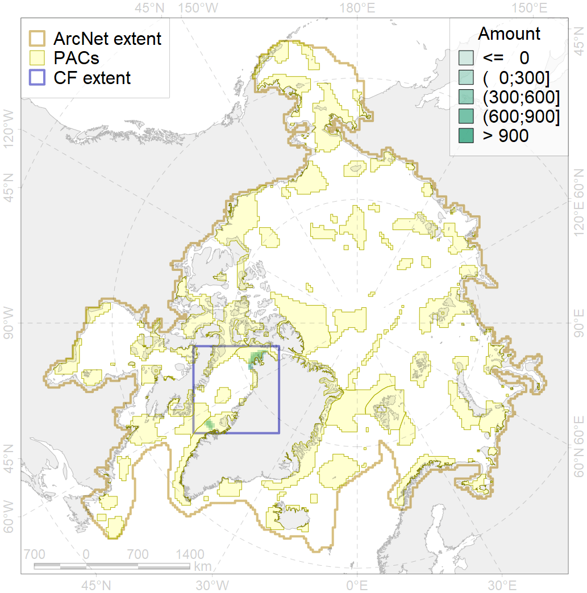
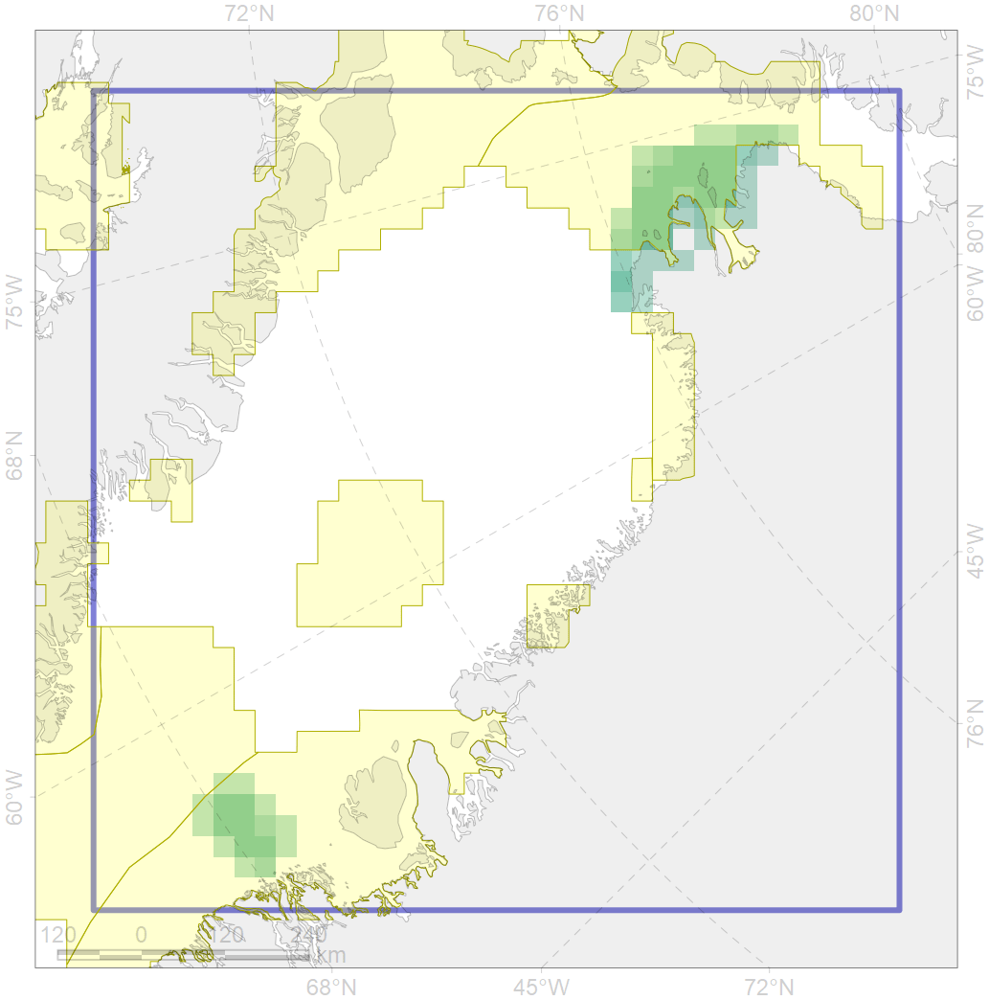

2064

| CF code | 2064 |
| CF name | Bearded seal concentration areas in Greenland |
| Time Period | |
| Source(s) | Christiansen et al., 2016 |
| Seasonality | |
| Depth Horizon | |
| Methodology | sattelite tagging |
| Use Restrictions | Data provided by the author |
| Author Name | Irina Trukhanova, Boris Solovyev |
| Notes | |
| Scenario’s Target | 0.24 |
| Target Achievement | 0.857 (Scenario: 357.3%) |
| PAC | Share of the Total Amount within the PAC | Share of the Target Achievement for the ArcNet | PAC’s Contribution to the Target Achievement |
|---|---|---|---|
| 44 | 25.9%26.0% | 107.8%108.3% | 30.2%30.3% |
| 45 | 0.1%0.3% | 0.4%1.4% | 0.1%0.4% |
| 51 | 55.5%63.1% | 223.8%251.8% | 62.6%70.5% |
| inner | 81.5%89.5% | 332.1%361.5% | 92.9%101.2% |
| outer | 18.5%43.2% | 25.2%123.2% | 7.1%34.5% |
| † supplement values are for area consistence whereas principal values are for Accenter compatible gridded stats |